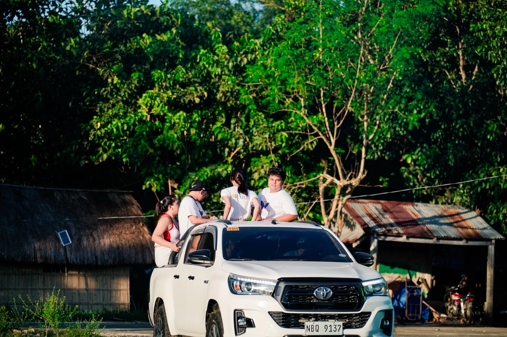
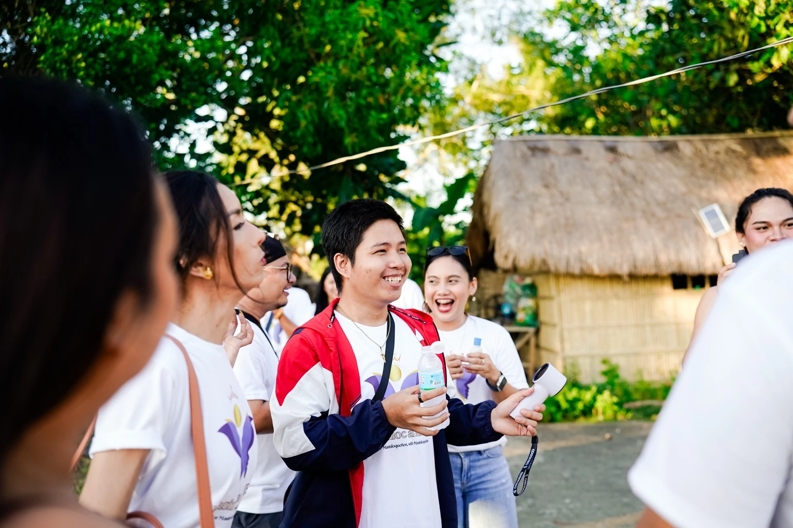
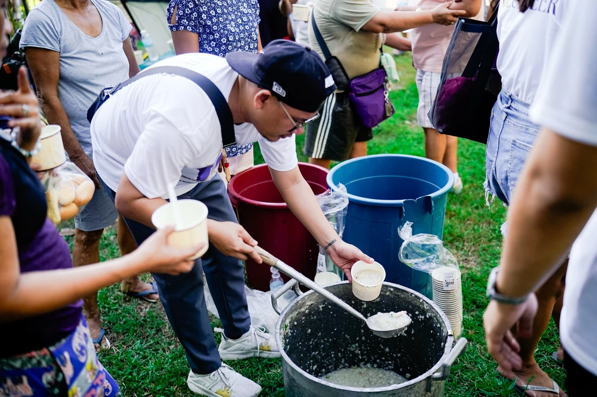
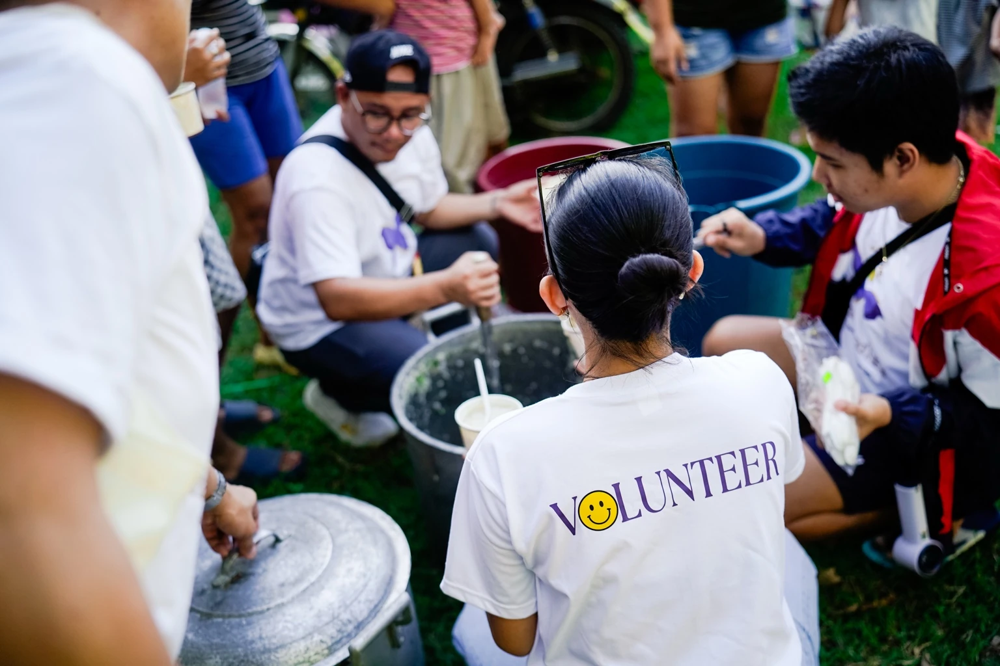
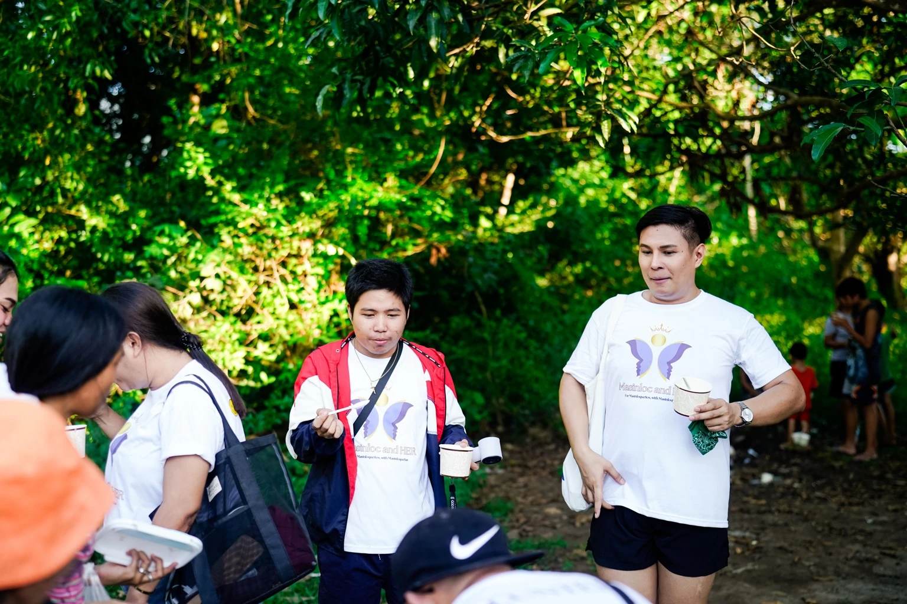
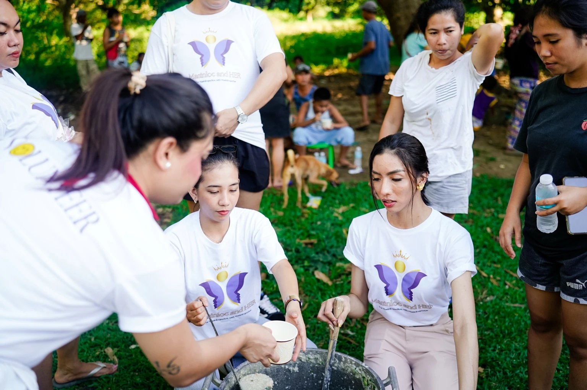
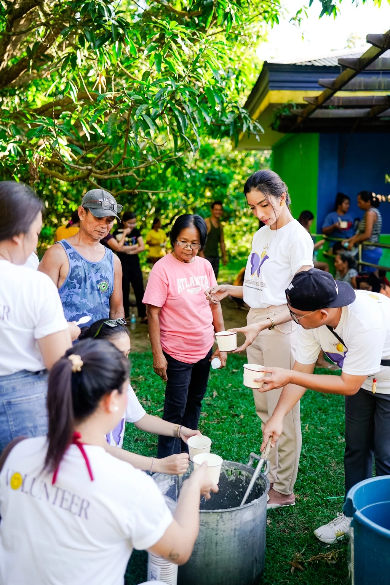
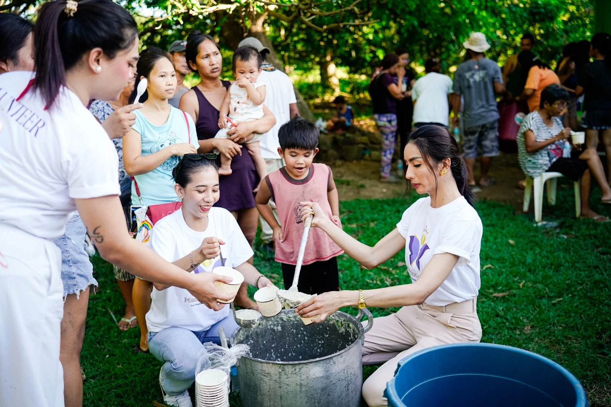
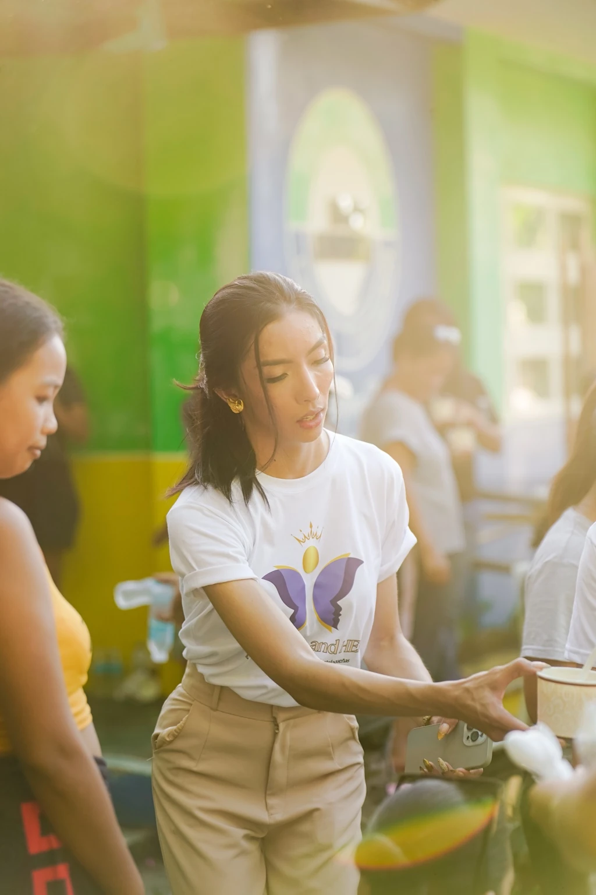
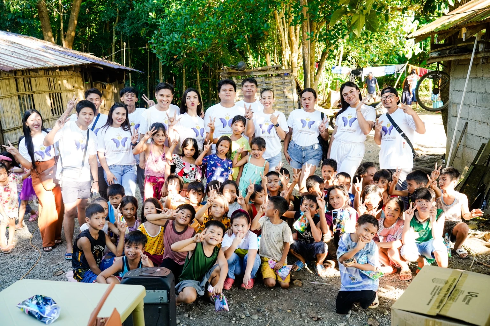

Volunteer roles are for people who can work calmly, respect privacy, follow clear limits, and understand that supportive work is not a substitute for licensed professional care.










Swipe left or use the arrows1 / 10
Community support volunteers
Welcome and guide
Help members find public resources, understand website features, and feel received without judgment. Volunteers do not diagnose, counsel, or handle emergencies alone.
Helpful background:
Community work, student leadership, peer support, social work training, customer care, or relevant lived experience handled responsibly.
Research and content volunteers
Check facts and sources
Help review wellness resources, public information, reading materials, and supportive content. Claims must be sourced, current, and written without exaggeration.
Helpful background:
Research, education, libraries, health communication, psychology, social sciences, writing, or fact-checking.
Website care volunteers
Test and maintain
Help check broken links, mobile display, accessibility, forms, content updates, and simple technical issues.
Helpful background:
Web development, product testing, design, accessibility, content management, cybersecurity awareness, or documentation.
What volunteers can expect
Clear roles and clear limits.
Volunteers should receive a written role, a contact person, relevant training, privacy expectations, and a way to report concerns.
No volunteer should be asked to act as a therapist, crisis responder, lawyer, or medical professional unless qualified, formally assigned, and operating within a proper service.
Future community work
Projects that can grow with the right people.
Reading circles
Small guided discussions around identity, confidence, mental health literacy, healthy relationships, and digital skills.
Wellness learning sessions
Carefully sourced sessions about women’s health, LGBTQIA+ respect, emotional literacy, and healthier masculinity.
Community service
Resource drives, learning activities, and partnerships with groups already doing trusted work.